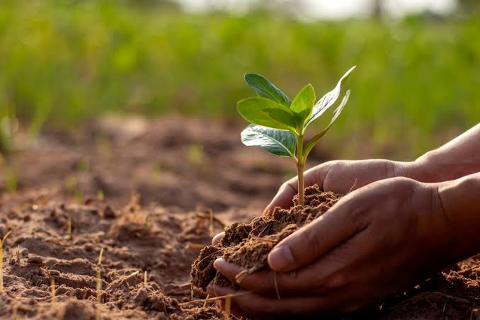
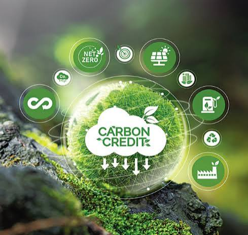

In the field
Our work across Southern Africa
Assessments, monitoring and advisory work on the ground.




Environmental consulting, research support, training, and monitoring and evaluation for organisations and communities across Southern Africa.
Evidence and data behind every recommendation
Assessments, compliance and restoration
Training and skills that stay after we leave
Working across Zimbabwe, Botswana and South Africa
Six practice areas, one standard of technical rigour.
Environmental Impact Assessments, environmental management plans, auditing, waste management and carbon advisory.
Learn moreSHEQ audits, ISO management systems and cleaner production, so your systems stand up to scrutiny.
Learn moreOccupational safety and health, industrial hygiene, fire fighting, chemical handling and farmer training programmes.
Learn moreProject planning, monitoring and evaluation frameworks, baseline surveys and impact reporting.
Learn moreRestoration planning, biodiversity surveys and conservation work that rebuilds healthy landscapes.
Learn moreResearch data analysis, proposal development, thesis writing coaching and guidance on the responsible use of AI in academic work.
Assessments, monitoring and advisory work on the ground.



Our environmental professionals bring specialist training and field experience, so assessments and reports are technically sound and aligned with environmental legislation in each country we work in.
TheTeacher.AI for Zimbabwean learners and TUTOROO for Botswana, from early years to Form 6.
Send us a message on WhatsApp and we will respond during business hours.
+263 77 779 1851
Chat on WhatsApp